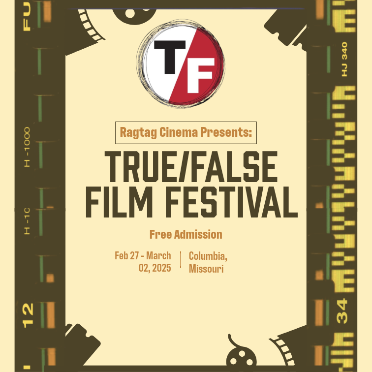
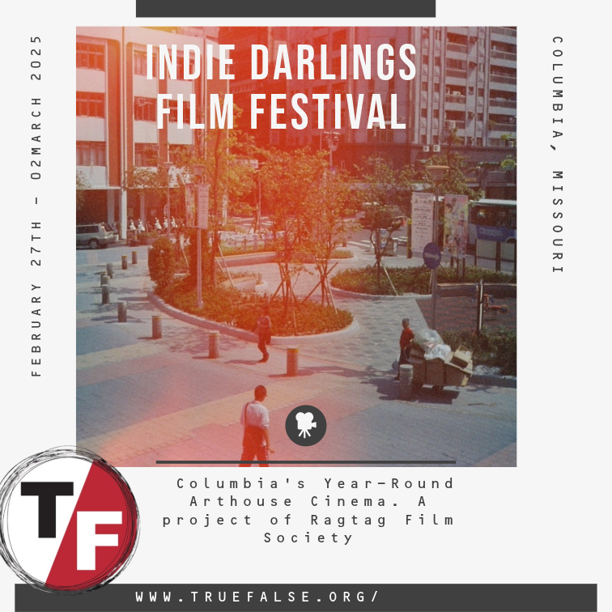

True/False Film Festival
.png)

.png)

Exploring the Art of Web Design
Over this HTML and GitHub project, I learnt several very important modern web development techniques. Using CSS Grid and Flexbox to apply responsive design ideas really helped me to grasp user experience optimisation across several devices. Improving accessibility and SEO performance turned out to be much aided by working with semantic HTML5 elements. Particularly in regard to branching techniques and group projects, the Git version control features were quite instructive. This project showed how basic professional web development is depending on technical competence and methodical organisation.
The CARP project changed my view of basic design ideas. Investigating how contrast, alignment, repetition, and closeness interact revealed fresh aspects in design visually appealing layouts. This project shown how well these ideas produce coherent designs and efficient visual hierarchies, therefore pushing me to go beyond theoretical knowledge to real application. By means of practical experimentation, I established how these fundamental components may be controlled to direct user attention and improve general design effectiveness. The approach underlined how relevant these ideas are always for contemporary digital design.
Investigating typography on this project made clear how important it is in digital communication. Experimenting with several typefaces and spacing styles helped me to realise how much typeface really influences readability and user experience. The project proved how much font decisions affect emotional response and brand impression. Knowing responsive typography proved especially helpful since it demonstrated how flexible type systems might improve design on many screen sizes. This research focused on the need of typography not only as a design element but also as a fundamental part of good digital communication.
Typographic organisation has always been a challenging system in that there are so many components at work, including hierarchy, order of reading, legibility, and contrast. Elam gives a wide spectrum of design answers by guiding the reader through activities, student projects, and professional examples.Once basic visual organisation systems are grasped, the designer can simply arrange words or images within a structure, combination of structures, or variant of a structure.

Axial designs are a type of layout where everything is placed on either side of a line. They can be symmetrical or asymmetrical around their axis. To create an axial design, divide everything by an imaginary line, while a bilateral design puts the center of everything on the same line. To create an axial design, draw a light line on the page and place content along either side of the line. Adjust column width, angle the axis, add non-objective elements, and mix with the text to create a visually appealing layout.

Radial design is a visually interesting layout system that uses a central focal point to radiate content out from. It is useful for posters and interactive websites but may be harder to read. To create a radial design, start with content and medium, adjust the inner and outer edges, group text, and use non-objective elements like tangential circles. Start with paper and pencil for ease of use.
Dilatational designs use type set along circular paths, forming curves around a point. They are suitable for small blocks of text and posters. To create a dilatational design, choose text, graphics, and hierarchy. Variate the centers, use multiple circles, and change the size of the circles. Use non-objective elements and add tangential circles for motion. Fill in fields to create a visually appealing design.
My Random system creates controlled chaos while maintaining visual harmony. This approach reflects the unpredictable nature of everyday moments captured in Kawauchi's work, with text elements placed seemingly spontaneously yet maintaining readability.

Grid layouts are popular among top designers, with Massimo Vignelli and Josef Muller-Brockmann advocating for their use. They ensure text and graphics fit neatly into columns and rows, making them ideal for various formats. To create a grid, start with the text and composition size, then choose the boundaries, create columns, adjust the area, divide the composition into rows, and define visual fields. Fill these fields with text and graphics, ensuring no spills over into spaces between them.

Modular layouts use repeating structures, such as shapes, to break up content. They are ideal for content that is already cut up, like posters. To create a modular design, create a repeatable structure like squares or circles, and use various shapes and layouts.
Transitional designs, resembling earth's layers, are ideal for posters and book covers. To create these, draw sediment lines, imply movement with angles, shapes, and text placement. Use non-objective elements to add visual intrigue, emphasis, or balance, and use simple shapes and rules.
Bilateral designs, also known as centered, are often boring and regular. To create a good bilateral design, use vertical space to create vertical asymmetry, horizontal space to add simple shapes and rules, use multiple groups to break up monotony, tilt the line to center text, and use non-objective elements to add visual intrigue or balance. Remember, no design can ever be symmetrical.
The trip across these three linked projects has greatly changed my perspective of contemporary web design and development. This thorough education process has made clear how closely technical ability and creative design ideas interact to produce successful digital experiences.
My basis came from the HTML/GitHub project, which exposed me to the technical core of web building. Learning to organise material semantically using responsive design ideas underlined the need of accessibility in contemporary web development. Originally difficult, the version control features of Git grew ever more important as I realised their part in professional development processes. Understanding how development techniques support effective team collaborations depends on this technical basis, which proved indispensable.
The CARP project developed on this technical basis by adding important design concepts. Examining contrast, alignment, repetition, and closeness gave visual design a disciplined method. I learnt how these ideas cooperate to produce visual hierarchies guiding people across organically occurring content. The project disproved my first presumption—that design was only aesthetic—by highlighting its part in user experience and successful communication. Every design choice turned into a smart mix between aesthetic appeal and practical use.
Emphasising the subtle function of text in digital design, the Typography project finished this learning triangle. Practical application taught me that typography affects brand perception and user confidence, therefore beyond simple readability. Typography is a great tool for digital communication since the project let me realise how different typefaces may inspire particular feelings and promote content hierarchy.
This learning path has made clear how closely technical and creative elements of web development are related. Every project developed upon the others to provide a complete knowledge of contemporary web design. While typography knowledge improved both areas by enhancing content presentation and user experience, the technological abilities from the HTML/GitHub project offered the framework for executing CARP ideas.
My attitude to web development has been drastically altered by this educational process. These days, I see it as a whole field in which typography, design ideas, and technical knowledge cooperate to produce successful digital experiences. Supported by pragmatic application and ongoing education, the combination of these components has given me a solid basis for my next projects in online design and development.